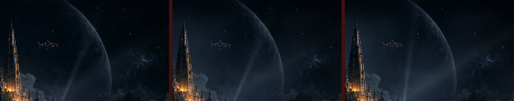
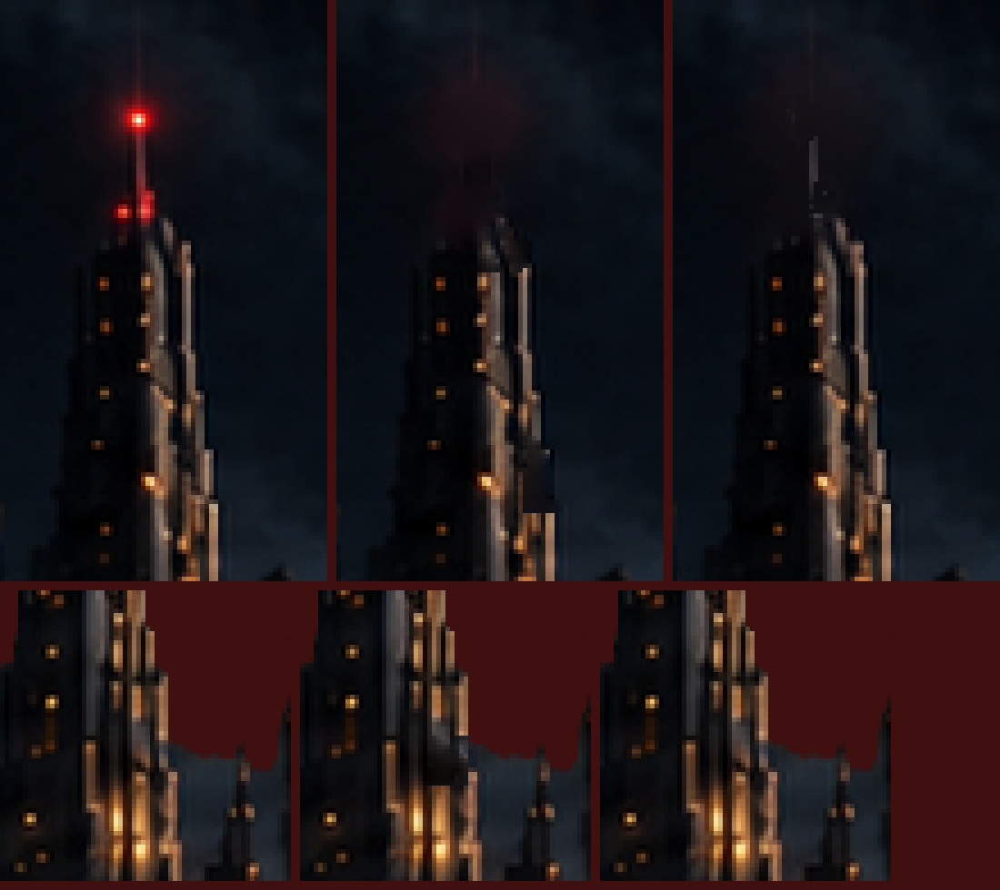
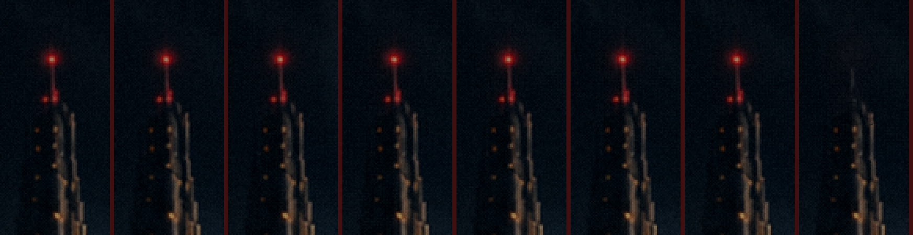
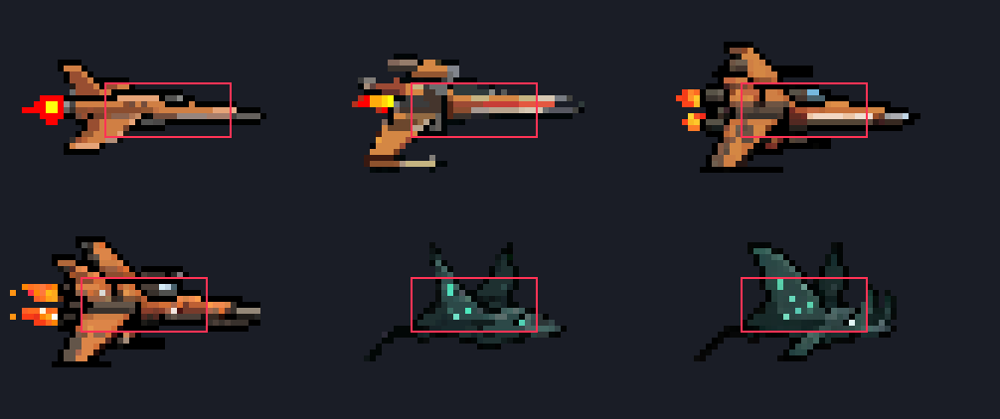
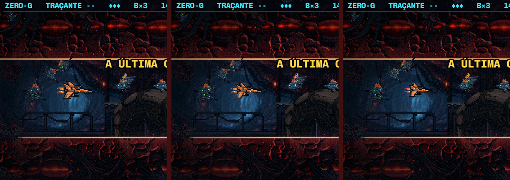

Os ajustes de 22/10 · o menu e as naves
22/10/2026 · As luzes que você marcou (corrigidas, no jogo), o Leviatã sem degraus e mais lento, e a névoa de espaço na janela (três variantes). Os vídeos são o próprio jogo, filmado em velocidade real, só a janela de céu (1536 px de largura: aumente para tela cheia). Nada commitado.
✅ O que você decidiu (no jogo)
Luzes ok · Leviatã em 120 s · espaço A, levemente mais densa (os dois picos do véu subiram 20%). As variantes B e C e as chaves da maquete (?espaco, ?levi) saíram do código.

1 · As luzes que você marcou (no jogo)
- A antena (o círculo de cima): ao apagar os três faróis, a regra trocava o halo vermelho pelo céu, e levava junto o mastro (rosado pela luz) e a quina bege do topo da torre: "a torre some". Agora o farol apaga perdendo só o vermelho: o mastro fica cinza, o topo fica com a quina, e o halo volta a ser céu (medido: sem a mancha escura que sobrava).
- As duas "janelas pretas" (a torre da esquerda e a cidadela, ao lado do título): não eram janelas, eram o brilho bege da quina da torre, que o detector tomou por luz. Ao "apagar", a quina virava um entalhe preto. Elas deixaram de apagar.
- Só elas mudaram: as 24 janelas que piscam e todos os outros faróis são exatamente os de antes (conferido pixel a pixel: o resto do
apagadas.pngé idêntico, e a escolha das luzes não mudou). Vale também para a versão sem a camada HD.


2 · O Leviatã: sem degraus, mais lento, ondulando
- Os degraus e o "travado" eram o arredondamento. O Phaser arredonda a posição de um sprite para o pixel de JOGO inteiro antes de ampliar a camada HD: em 1920 px, cada passo dele virava um salto de 5 px. Ele descia um degrau a cada ~4 s e andava aos trancos. Agora a posição anda por pixel de TELA (só nele: o resto do menu não muda). Medido na tela (1920 px, o nado congelado): antes, parado por 6–7 quadros e um salto de 5 px; agora, 0 ou 1 px por quadro, sempre.
- Orgânico: em vez da reta, ele ondula devagar (sobe e desce 2,5 px, uma onda e meia por travessia), e chega e sai no mesmo lugar de antes.
- Mais lento: a travessia era de 45 s. Aqui estão as de 90 s e 120 s. Quando o título acende, ele está no mesmo lugar de hoje.
3 · O espaço na janela (três variantes, com o Leviatã de 90 s)
Tudo mora entre o céu com o planeta e a colônia, então só aparece na área que você marcou (a colônia cobre o resto).
- A · Véu: mais duas camadas da bruma das fases, fria, andando devagar.
- B · Nebulosa: gás em fios, em dois planos: um atrás do Leviatã e um na frente. Ele passa a nadar dentro do gás, com fios cruzando por cima dele. O planeta fica velado.
- C · Nebulosa iluminada: a B, com o gás pegando a luz do planeta no lado aceso (a direita), respirando devagar.
Para ver no menu de verdade: localhost:5173/?espaco=a (ou b, c, 0), e &levi=120 para a travessia de 120 s.
4 · As naves: tamanho e visual (análise, nada mudou no jogo)
- A hitbox é a mesma para toda nave e todo tier: 21×9 px. A T3 não bate mais que a T0; ela parece maior. O desenho da T2/T3 tem 41×22 px, quase 2× a hitbox na largura e 2,4× na altura. No duto da F4 (o vão mais apertado, 68 px), a T3 ocupa um terço do vão "a olho": por isso a travessia fica mais difícil de ler.
- Medidas hoje (o desenho, sem a chama): T0 35×16 · T1 38×20 · T2 41×22 · T3 41×22 · manta T1 33×17 · manta T2 40×19.
- O visual: os cascos humanos são laranja-caramelo claro por inteiro. Isso vai contra a regra do dark sci-fi (casco escuro, luz só onde há energia): numa fase escura, a nave é a coisa mais clara da tela. A T3 é uma "T2 mais gorda" (asa dupla), não uma forma nova. As mantas (azul-petróleo escuro) já estão no estilo.


A proposta:
- Tamanho: a evolução continua crescendo, mas numa faixa menor. T0 ~30×12 → T1 ~32×13 → T2 ~34×14 → T3 ~36×15 (−12% no comprimento e −32% na altura). Mantas: ~30×13 e ~33×14. A hitbox não muda.
- Visual: casco escuro (metal grafite), o laranja só nos motores, na cabine e nas luzes; silhueta de perfil limpa; cada tier com uma forma própria (a T3 ganha motores e placas, não volume).
- Como: desenhar no tamanho final (nunca reduzir a arte de hoje): 3–4 conceitos por tier no PixelLab, de perfil, numa folha, no tamanho do jogo e plantados na fase. Você escolhe, e só depois vêm as chamas (os 8 quadros, e a versão azul da carta Propulsores).
O que você decide
- As luzes: se ficaram como você queria.
- O Leviatã: 90 s ou 120 s, e se a ondulação está boa (mais, menos, nenhuma).
- O espaço: A, B ou C, e a força (cada uma é um número só: dá para deixar mais leve ou mais densa).
- As naves: se seguimos com a proposta (o tamanho e o casco escuro), e se as mantas entram junto ou só as humanas.